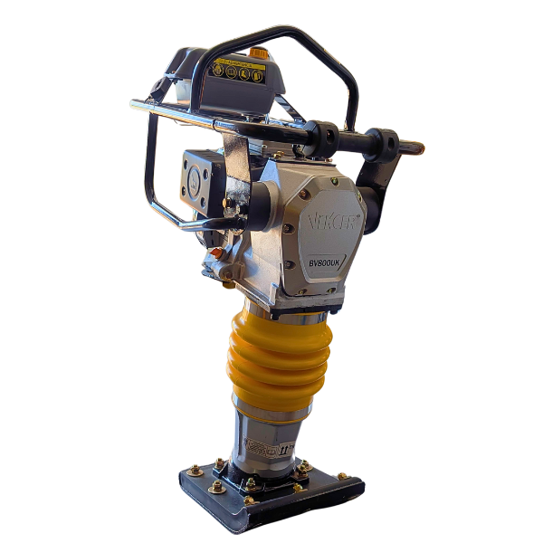
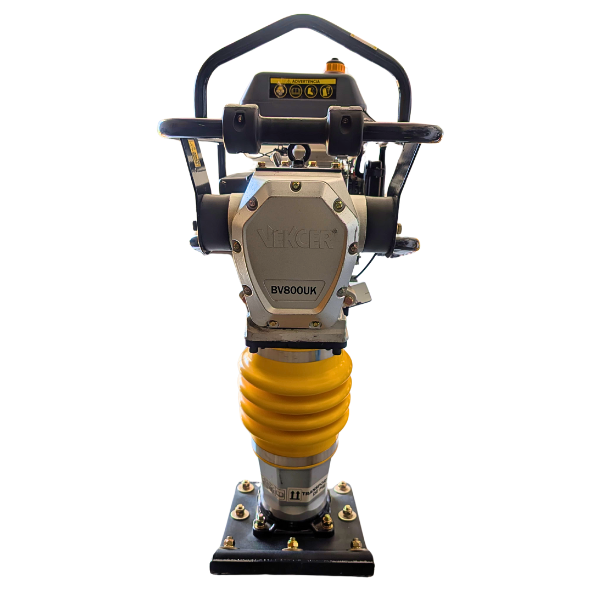
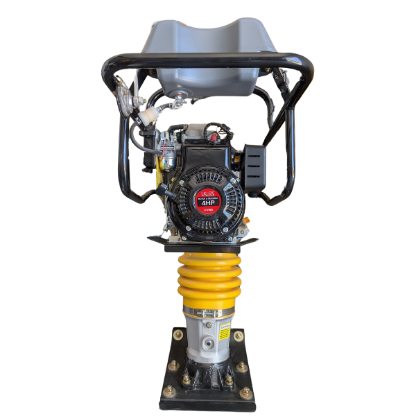
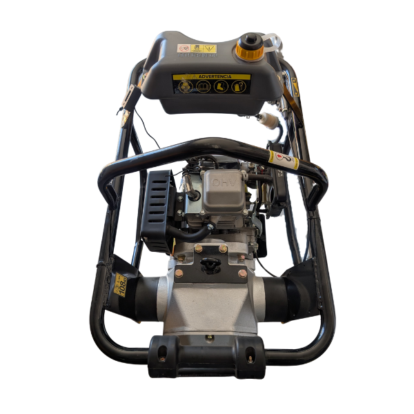

BAILARINA COMPACTADORA VEKCER
📄 Descargar Ficha TécnicaModelo: BV800UK
La Bailarina Vekcer BV800UK es una compactadora de alta calidad, diseñada para ofrecer un rendimiento excepcional en la compactación de suelos y asfaltos. Con un motor potente y un diseño ergonómico, esta bailarina es ideal para proyectos de construcción, ofreciendo una compactación eficiente en espacios reducidos y zonas de difícil acceso. Su estructura robusta asegura durabilidad y resistencia en condiciones de trabajo exigentes, mientras que su tamaño compacto facilita su transporte y almacenamiento. ¡Una herramienta confiable para tu equipo de trabajo!
| Especificación | Detalle |
|---|---|
| Motor | Ukura |
| Potencia de motor | 4hp |
| Fuerza de impacto(KN) | 18 |
| Peso | 72 kg |
| Salto de golpe | 40 a 50 centímetros |
| Número de impactos | 600 a 650 golpes por minuto |